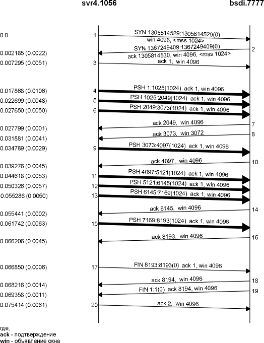
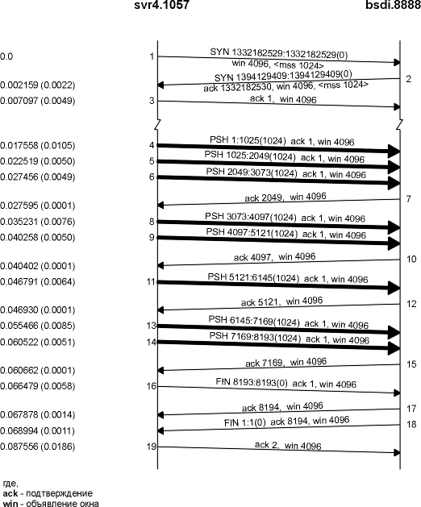
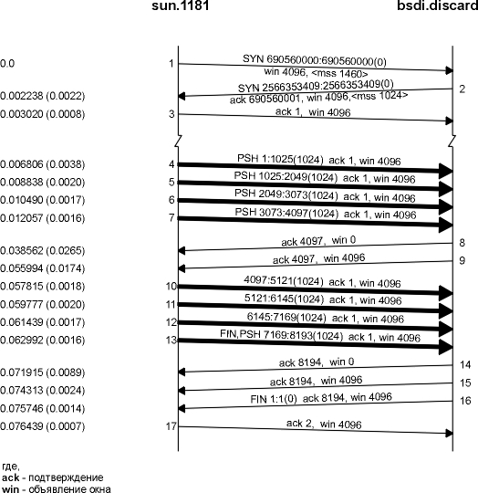
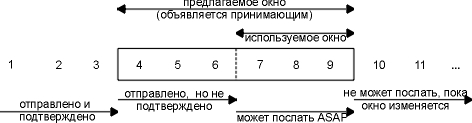
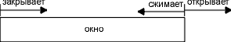
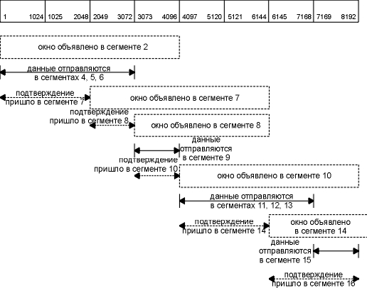
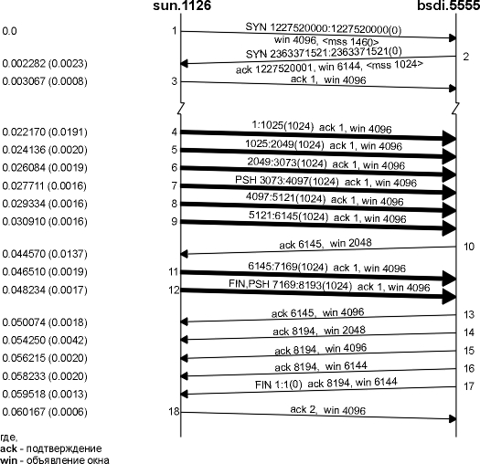
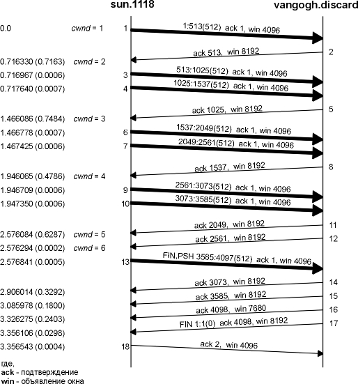
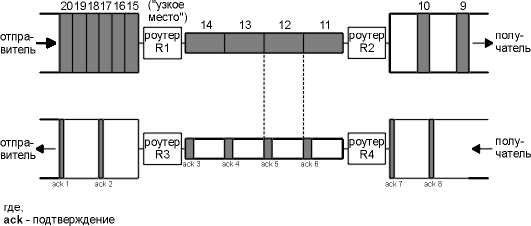
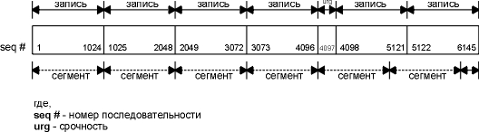

Глава 20 Поток неинтерактивных данных TCP
В главе 15 мы видели, что TFTP использует протокол с ожиданием подтверждения (stop-and-wait). Отправитель блока данных требует подтверждения на этот блок, перед тем как будет отправлен следующий блок. В этой главе мы увидим, что TCP использует другую форму управления потоком данных, которая называется протоколом с изменяющимся окном (sliding window) . Это позволяет отправителю передать несколько пакетов, перед тем как он остановится и будет ждать подтверждения. При этом данные передаются быстрее, так как отправитель не должен останавливаться и ждать подтверждения каждый раз после отправки пакета.
Также мы увидим TCP флаг PUSH, который мы уже встречали в предыдущих примерах. Рассмотрим медленный старт, технику, используемую TCP для получения потока данных при установлении соединения, а затем рассмотрим пропускную способность при передаче неинтерактивных данных.
Давайте начнем с рассмотрения односторонней передачи 8192 байт от хоста svr4 к хосту bsdi. Мы запустили нашу программу sock (как сервер) на bsdi:
bsdi % sock -i -s 7777
Флаги -i и -s сообщают о необходимости запустить программу в качестве сервера, не обрабатывающего данные (при этом данные читаются из сети и отбрасываются), номер порта сервера установлен в 7777. Клиент, соответственно, запускается следующим образом:
svr4 % sock -i -n8 bsdi 7777
Клиент осуществляет в сеть восемь записей размером 1024 байта каждая. На рисунке 20.1 показана временная диаграмма этого обмена. Мы оставили первые 3 сегмента вывода, чтобы показать значение MSS (максимальный размер сегмента) для каждой стороны.

Рисунок 20.1 Передача 8192 байт от svr4 к bsdi.
Во-первых, отправитель передает три сегмента данных (4-6). Следующий сегмент (7) подтверждает только первые два сегмента данных. Мы знаем об этом, потому что номер последовательности подтверждения равен 2049, а не 3073.
Сегмент 7 содержит ACK с номером 2049, а не 3073 по следующей причине. Когда пакет прибывает, он первоначально обрабатывается драйвером устройства, а затем помещается во входную очередь IP. Три сегмента 4, 5 и 6 прибывают один за другим и помещаются во входную очередь IP в том порядке, как они были приняты. IP затем передаст их в TCP в том же самом порядке. Когда TCP обрабатывает сегмент 4, в соединении генерируется задержанный ACK. TCP обрабатывает следующий сегмент (5), и теперь TCP имеет два сегмента, на которые необходимо сгенерировать подтверждение (ACK), поэтому генерируется подтверждение с номером 2049 (сегмент 7), а флаг задержанного ACK для этого соединения снимается. TCP обрабатывает следующий входной сегмент (6), а в соединение снова генерируется задержанный ACK. Перед тем как прибывает сегмент 9, выключается таймер задержанного ACK и генерируется подтверждение с номером 3073 (сегмент 8). В сегменте 8 окно объявляется размером 3072 байта, так как 1024 байта данных в приемном буфере TCP до сих пор не прочитаны приложением.
В случае сегментов 11-16 подтверждение осуществляется на каждый сегмент. Сегменты 11, 12 и 13 прибывают и помещаются во входную очередь IP. Когда сегмент 11 обрабатывается TCP, соединение помечается как использующее задержанное ACK. Когда обрабатывается сегмент 12, генерируется ACK (сегмент 14) на сегменты 11 и 12, а флаг задержанного ACK для данного соединения снимается. При обработке сегмента 13 соединение вновь помечается как использующее задержанное ACK, однако перед тем как задержанный ACK снимается по таймеру, обрабатывается сегмент 15, при этом ACK (сегмент 16) отправляется немедленно.
Очень важно обратить внимание на то, что ACK в сегментах 7, 14 и 16 подтверждает два принятых сегмента. В случае использования протокола TCP с изменяющимся окном, принимающая сторона не должна подтверждать каждый принятый пакет. В случае TCP, подтверждения накапливаются - они подтверждают, что получатель корректно принял все байты до номера последовательности подтверждения минус один. В этом примере три из ACK подтвердили 2048 байт данных, а два подтвердили 1024 байта данных. (За исключением ACK, появлявшихся при установлении и разрыве соединения.)
С помощью tcpdump мы посмотрим TCP в действии. Порядок прохождения пакетов, который мы видим, зависит от многих факторов, большинство из которых сложно проконтролировать: реализация посылающего TCP, реализация принимающего TCP, чтение данных принимающим процессом (это зависит от процесса построения временных графиков в операционной системе) и динамики сети (коллизии в Ethernet). Не существует одного единственного корректного способа для двух TCP осуществить обмен данными.
Для того чтобы показать, как все может измениться, на рисунке 20.2 показана еще одна временная диаграмма для того же самого обмена данными между теми же самыми хостами. Обмен был осуществлен через несколько минут после того, который был показан на рисунке 20.1.

Рисунок 20.2 Еще одна передача 8192 байт от svr4 к bsdi.
Здесь мы видим несколько отличий. Приемник не отправляет ACK с номером 3073; вместо этого он ожидает и отправляет ACK с номером 4097. Принимающий посылает только четыре ACK (сегменты 7, 10, 12 и 15): три из них на 2048 байт и один на 1024 байт. ACK на последние 1024 байта данных отправляется в сегменте 17, вместе с подтверждением на FIN. (Сравните сегмент 17 на этом рисунке с сегментами 16 и 18 на рисунке 20.1.)
Быстрый отправитель, медленный получатель
На рисунке 20.3 показана еще одна временная диаграмма, которая в данном случае показывает быстрого отправителя (Sparc) и медленного получателя (80386 с медленной Ethernet платой). Динамика снова изменилась.

Рисунок 20.3 Отправка 8192 байт от быстрого отправителя медленному получателю.
Отправитель передает четыре сегмента данных (4-7), чтобы заполнить окно объявленное получателем. Затем отправитель останавливается и ожидает подтверждения. Получатель отправляет подтверждение (сегмент 8), однако объявляет окно равное 0. Это означает, что получатель получил данные, однако все они находятся в TCP буферах получателя, потому что приложение не имеет возможности считать данные. Еще один ACK (называемый обновлением окна) посылается через 17,4 миллисекунды и объявляет о том, что получатель теперь может получить следующие 4096 байт. То, что выглядит как подтверждение (ACK), в действительности является обновлением окна, потому что здесь не происходит подтверждения каких-либо вновь полученных данных, а просто объявляется новый размер окна.
Отправитель передает свои последние четыре сегмента (10-13) и опять заполняет окно принимающего. Обратите внимание, что сегмент 13 содержит два флаговых бита: PUSH и FIN. После этого следуют еще два подтверждения от принимающего. Они подтверждают последние 4096 байт данных (байты от 4097 до 8192) и FIN (который имеет номер 8193).
Протокол изменения размера окна, который мы рассмотрели в предыдущем разделе, может быть проиллюстрирован следующим образом.

Рисунок 20.4 Иллюстрация изменения окна TCP.
На этом рисунке мы пронумеровали байты с 1 по 11. Окно, которое объявляется принимающим, называется предлагаемым окном и покрывает собой байты с 4 по 9, что означает, что получатель подтвердил все байты до 3 включительно и объявляет размер окна равный 6. Обратитесь снова к главе 17, где мы говорили, что размер окна связан с подтвержденным номером последовательности. Отправитель рассчитывает свой возможный размер окна. Рассчитанное значение указывает, какое количество данных он может отправить немедленно.
С течением времени размер окна сдвигается вправо, по мере того как принимающий подтверждает данные. Взаимное перемещение двух границ окна увеличивает или уменьшает его размер. Для описания перемещения границ окна вправо и влево используются три термина.
- Окно закрывается, когда его левая граница совпадает с правой. Это происходит, когда данные отправлены и подтверждены.
- Окно открывается, когда его правая граница сдвигается вправо, при этом данные могут быть отправлены. Это происходит, когда принимающий процесс читает подтвержденные данные, освобождая тем самым место в приемном буфере TCP.
- Окно сжимается, когда его правая граница передвигается влево. Требования к хостам Host Requirements RFC очень не рекомендуют делать это, так как TCP соединение может быть установлено с хостом, который не поддерживает подобную опцию. В разделе "Синдром "глупого" окна" главы 22 показан пример, когда одна граница хочет сжать окно, передвинув его правый край влево, однако не может.
На рисунке 20.5 проиллюстрированы эти три термина. Левая граница окна не может быть сдвинута влево, потому что она определяется номером принятого подтверждения от удаленной стороны.

Рисунок 20.5 Перемещение границ окна.
Если приняты ACK, которые требуют перемещения левой границы окна влево, это дублированные ACK, они отбрасываются.
Если левая граница окна совпала с правой, это называется нулевым окном. При этом отправитель прекращает передачу данных.
Пример
На рисунке 20.6 показана динамика работы протокола TCP с изменением окна для передачи данных, показанной на рисунке 20.1.

Рисунок 20.6 Протокол изменения размера окна для рисунка 20.1.
Рассматривая эти рисунки, можно сделать следующие выводы.
Отправитель не должен передавать полное окно данных. Один сегмент от получателя подтверждает данные и раздвигает окно вправо. Это происходит из-за того, что размер окна связан с номером последовательности, которая была подтверждена. Размер окна может уменьшаться, как это показано для сегментов 7 и 8, однако правая граница окна не должна перемещаться влево. Получатель не должен ждать, пока окно заполнится перед отправкой ACK. Раньше мы видели, что большинство реализаций посылают ACK для каждых двух сегментов, которые были получены.
Мы увидим примеры подобного поведения протокола изменения окна в следующих примерах.
Размер окна, предлагаемый получателем, обычно определяется получающим процессом. Это может оказать влияние на производительность TCP.
В 4.2BSD приемные и отправляющие буферы по умолчанию устанавливаются в 2048 байт каждый. В 4.3BSD оба были увеличены до 4096 байт. Как мы можем видеть из всех примеров, приведенных в тексте, SunOS 4.1.3, BSD/386 и SVR4 все еще используют по умолчанию размер буфера 4096 байт. Другие системы, такие как Solaris 2.2, 4.4BSD и AIX 3.2, используют по умолчанию большие размеры буферов, 8192 или 16384 байта.
API сокеты позволяют процессу устанавливать размеры отправляющего и приемного буферов. Размер принимающего буфера равен максимальному размеру объявленного окна для данного соединения. Некоторые приложения изменяют размеры буферов для увеличения производительности.
[Mogul 1993] показывает некоторые результаты передачи файла между двумя рабочими станциями, находящимися в сети Ethernet, с различными размерами приемных и передающих буферов. (Для одностороннего потока данных, который осуществляется при передаче файла, размер передающего буфера на стороне отправителя, и размер приемного буфера на стороне получателя имеют большое значение.) Размеры по умолчанию, составляющие 4096 байт для обоих буферов, не являются оптимальными для Ethernet. Увеличение пропускной способности примерно на 40% было получено просто путем увеличения обоих буферов до 16384 байт. Подобный результат также показан в [Papadopoulos and Parulkar 1993].
В разделе "Пропускная способность для неинтерактивных данных" этой главы мы увидим, как рассчитать минимальный размер буфера для заданной полосы пропускания среды передачи и времени возврата между двумя сторонами.
Пример
Установить размер буферов можно с помощью программы sock. Запустим сервер следующим образом:
bsdi % sock -i -s -R6144 5555
при этом размер приемного буфера (опция -R) устанавливается в 6144 байта. Затем стартуем клиента на хосте sun и осуществляем одну запись размером в 8192 байта:
sun % sock -i -n1 -w8192 bsdi 5555
На рисунке 20.7 показан результат.

Рисунок 20.7 Передача данных, при которой получатель объявляет размер окна равный 6144 байта.
Во-первых, обратите внимание на то, что в сегменте номер 2, получатель предлагает размер окна, равный 6144 байта. Так как размер окна увеличен, клиент немедленно посылает шесть сегментов (сегменты 4-9), после чего останавливается. В сегменте 10 все данные подтверждаются (байты с 1 по 6144), и объявляет размер окна равный всего лишь 2048, возможно потому, что принимающее приложение не может считать больше чем 2048 байт. Сегменты 11 и 12 завершают передачу данных от клиента, этот же последний сегмент данных содержит флаг FIN.
Сегмент 13 содержит тот же самый номер последовательности подтверждения как и сегмент 10, однако объявляет окно большего размера. Сегмент 14 подтверждает последние 2048 байт данных и FIN, а сегменты 15 и 16 просто объявляют окно большего размера. Сегменты 17 и 18 осуществляют нормальное закрытие.
Мы видели флаг PUSH практически в каждом примере работы TCP, однако никогда не говорили о том, как он используется. Назначение этого флага заключается в том, что отправитель с его помощью предлагает получателю отправить все имеющиеся у него данные получающему процессу. Эти данные могут состоять из чего-либо угодно находящегося в сегменте, где взведен флаг PUSH, вместе с любыми другими данными, которые принимающий TCP собрал для принимающего процесса.
В исходной спецификации TCP предполагалось, что программный интерфейс может позволить отправляющему процессу сказать своему TCP, когда необходимо установить флаг PUSH. Для интерактивных приложений, например, когда клиент посылает команду серверу, клиент может установить флаг PUSH и ожидать отклика от сервера. (В упражнении 1 главы 19 мы представили, что клиент установил флаг PUSH, когда осуществлялась запись 12-байтного запроса.) Так как приложению клиента разрешено потребовать от своего TCP установить флаг, осуществляется уведомление TCP клиента о том, что процесс клиента не хочет, чтобы данные заполнили TCP буфер в ожидании дополнительных данных перед отправкой сегмента серверу. Точно так же, когда TCP модуль сервера получил сегмент с флагом PUSH, он получает уведомление о необходимости передать данные процессу сервера, а не ожидать прихода дополнительных данных.
В настоящее время, однако, большинство API не предоставляют приложению способа сообщить своему TCP о необходимости установить флаг PUSH. Вместо этого реализации TCP самостоятельно определяют, когда необходимо установить этот флаг.
Большинство Berkeley реализаций автоматически устанавливают флаг PUSH, если отправка сегмента опустошает отправляющий буфер. Это означает, что обычно мы будем видеть флаг PUSH установленным для каждой записи от приложения, потому что в момент подобной записи данные отправляются.
В комментариях говорится, что этот алгоритм в основном подходит для тех реализаций, которые передают принятые данные приложению только тогда, когда буфер заполнен или сегмент принят с флагом PUSH. Не существует возможности с использованием сокет API сказать TCP взвести PUSH флаг или сказать, был ли установлен флаг PUSH в принятых данных.
Реализации Berkeley игнорируют принятый PUSH флаг, потому что они обычно никогда не задерживают доставку принятых данных приложению.
Примеры
На рисунке 20.1 мы видели взведенный флаг PUSH для всех восьми сегментов данных (4-6, 9, 11-13 и 15). Это объясняется тем, что клиент осуществил восемь записей по 1024 байта каждая, и каждая запись опустошила отправляющий буфер.
Вернемся к рисунку 20.7. Мы ожидаем, что флаг PUSH будет установлен в сегменте 12, так как это последний сегмент данных. Почему флаг PUSH был установлен в сегменте 7, когда отправитель знал, что ему придется отправить еще некоторые байты данных? Причина заключается в том, что размер отправляющего буфера отправителя составляет 4096 байт, даже если мы осуществляем одну запись размером в 8192 байта.
Еще один момент, на который необходимо обратить внимание на рисунке 20.7, заключается в трех последовательных ACK, сегменты 14, 15 и 16. Мы видели два последовательных ACK на рисунке 20.3, однако это объяснялось тем, что получатель объявлял окно равное 0 (останавливал отправителя), поэтому когда окно открылось, потребовался еще один ACK, с ненулевым значением окна, чтобы перестартовать отправителя. На рисунке 20.7, однако, значение окна никогда не устанавливается в 0. Тем не менее, когда размер окна увеличивается до 2048 байт, отправляется еще один ACK (сегменты 15 и 16), чтобы осуществить обновление окна на удаленном конце. (Эти два окна, обновленные в сегментах 15 и 16, не нужны, так как с удаленного конца был принят FIN, после чего отправитель не будет посылать данные.) Большинство реализаций посылают это обновление окна, если размер окна достиг удвоенного значения максимального размера сегмента (2048 байт в данном примере, с MSS равным 1024) или 50% максимально возможного размера окна (2048 байт в этом примере, с максимальным окном 4096). Мы увидим это снова в разделе "Синдром "глупого" окна" главы 22, когда будем более подробно рассматривать синдром "глупого окна".
Другой пример, где появился флаг PUSH - рисунок 20.3. Причина, по которой мы видим этот флаг в первых четырех сегментах данных (4-7), заключается в том, что каждый из них генерируется TCP и передается в IP уровень. Однако, затем TCP должен остановиться, дождаться прихода ACK, чтобы отправить окно размером 4096 байт. Пока ожидается ACK, TCP берет последние 4096 байт данных от приложения. Когда окно открывается (сегмент 9), отправляющий TCP знает, что у него есть 4 сегмента, которые он может послать немедленно, поэтому он взводит флаг PUSH в последнем сегменте (13).
Во всех примерах, которые мы рассмотрели, отправитель начинает свою работу, отправив несколько сегментов в сеть. Размер записей может достигать размера окна, объявленного получателем. При этом все будет в порядке, если два хоста находятся в одной и той же локальной сети, однако если между отправителем и получателем присутствуют маршрутизаторы или медленные каналы, могут возникнуть проблемы. Некоторые промежуточные маршрутизаторы должны будут поместить пакеты в очередь, которая, кстати сказать, может переполниться. [Jacobson 1988] показывает, как в подобных случаях может значительно понизиться пропускная способность TCP соединения.
Поэтому от TCP требуется, чтобы он поддерживал алгоритм, который называется медленный старт. Он заключается в том, что осуществляется исследование, с какой скоростью новые пакеты должны отправляться в сеть, причем эта скорость должна соответствовать скорости, с которой пришли подтверждения с удаленного конца.
При работе с медленным стартом отправляющему TCP добавляется еще одно окно: окно переполнения, которое называется cwnd. Когда устанавливается новое соединение с хостом, находящимся в другой сети, размер окна переполнения устанавливается равным размеру одного сегмента (размер сегмента объявлен удаленным концом). Каждый раз, когда принимается ACK, окно переполнения увеличивается на один сегмент. (Размер cwnd измеряется в байтах, однако при медленном старте размер всегда увеличивается на размер сегмента.) Отправитель может передать объем данных величиной до минимального размера окна переполнения и объявленного окна. С помощью окна переполнения, отправитель осуществляет управление потоком, тогда как с помощью объявленного окна потоком управляет получатель.
Отправитель начинает работу, отправив один сегмент и ожидая ACK на этот сегмент. Когда ACK получен, окно переполнения увеличивается с одного сегмента до двух, и в этом случае могут быть отправлены два сегмента. Когда каждый из этих двух сегментов подтвержден, окно переполнения увеличивается до 4. Таким образом, осуществляется экспотенциальное увеличение.
В определенной точке достигается максимум передачи для данного соединения (объединенной сети), в этом случае промежуточный маршрутизатор начинает отбрасывать пакеты. Это говорит о том, что размер окна переполнения отправителя стал слишком большим. Когда мы будем рассматривать алгоритмы тайм-аутов и повторных передач TCP в следующей главе, то увидим как обрабатывается подобная ситуация и что происходит с окном переполнения. А сейчас давайте посмотрим, как работает медленный старт.
Пример
На рисунке 20.8 показаны данные, которые отправляются от хоста sun на хост vangogh.cs.berkeley.edu. Эти данные проходят по медленному SLIP каналу, который в данном случае будет являться узким местом передачи. (Из этой временной диаграммы удалено все, что связанно с установлением соединения.)
Мы видим, что отправитель отправляет один сегмент с 512 байтами данных, а затем ожидает ACK. ACK получено через 716 миллисекунд, что определяет время возврата. Затем окно переполнения увеличивается до двух сегментов, и эти два сегмента отправляются. Когда ACK получен в сегменте 5, окно переполнения увеличивается до трех сегментов. Несмотря на то, что может быть послано три сегмента, отправляется только два, перед тем как не будет получен еще один ACK.
Мы вернемся к медленному старту в разделе "Алгоритм предотвращения переполнения" главы 21 и увидим, как реализована альтернативная техника, называемая предотвращением переполнения.
Пропускная способность для неинтерактивных данных
Давайте посмотрим, как используется размер окна, как осуществляется управление потоком с помощью окон и медленного старта, а также как это влияет на пропускную способность TCP соединения, по которому передаются неинтерактивные данные.
На рисунке 20.9 показана работа подобного соединения, отправитель находится слева, получатель - справа. На рисунке показано 16 моментов времени. Для простоты время показано дискретно. В верхней половине каждого рисунка мы показываем сегменты, переносящие данные слева направо, и пронумерованные как 1, 2, 3 и так далее. ACK двигаются в другом направлении и показаны в нижней половине каждого рисунка. Мы рисуем ACK меньше и указываем номера сегментов, которые подтверждаются.

Рисунок 20.8 Пример медленного старта.

Рисунок 20.9 Моменты времени 0-15, иллюстрирующие пропускную способность при передаче неинтерактивных данных.
В момент времени 0 отправитель посылает один сегмент. Так как отправитель работает с медленным стартом (окно переполнения установлено в один сегмент), он должен ждать подтверждения на этот сегмент, перед тем как продолжить работу.
В моменты времени 1, 2 и 3 сегмент проходит по одному промежутку времени вправо. В момент времени 4 получатель читает сегмент и генерирует подтверждение. В моменты времени 5, 6 и 7 подтверждение движется по одному промежутку времени влево, обратно к отправителю. Таким образом, время возврата (RTT) составляет 8 промежутков времени.
Мы специально нарисовали сегмент подтверждения (ACK) меньше чем сегмент данных, так как обычно он состоит из IP заголовка и TCP заголовка. Здесь мы показываем поток данных без учета направления в один и тот же момент времени. Также мы делаем предположение, что ACK двигается с той же самой скоростью, что и сегмент данных, что в действительности не всегда верно.
В-общем, время отправки пакета зависит от двух факторов: задержки прохождения (которая вызвана конечной скоростью света, временами ожидания и аппаратурой передачи) и задержки передачи, которая зависит от скорости среды передачи (количество бит, которое может быть передано в среде передачи за секунду). Для данного пути между двумя узлами задержка прохождения фиксированна, тогда как задержка передачи зависит от размера пакета. При небольших скоростях определяющими являются задержки передачи (в упражнении 2 главы 7 мы даже не принимали во внимание задержку прохождения), однако для скоростей равных гигабитам определяющей является задержка прохождения (см. рисунок 24.6).
Когда получатель принимает ACK, он может передать два сегмента (которые мы пронумеровали как 2 и 3) в моменты времени 8 и 9. Окно переполнения сейчас составляет два сегмента. Эти два сегмента двигаются вправо по направлению к приемнику, где генерируются подтверждения в моменты времени 12 и 13. Промежутки времени между подтверждениями (ACK) идентичны промежуткам между сегментами данных. Это поведение TCP называется самонастройкой по времени (self-clocking). Так как получатель может генерировать ACK только тогда, когда данные получены, по промежуткам между подтверждениями можно определить скорость прибытия данных к приемнику. (В действительности, организация очереди на маршруте возврата может изменить скорость прибытия ACK.)
На рисунке 20.10 показаны следующие 16 временных промежутков. Прибытие двух ACK увеличивает окно переполнения с 2 до 4 сегментов, и эти четыре сегмента отправляются в моменты времени 16-19. Первый ACK возвращается в момент времени 23. Четыре ACK увеличили окно переполнения с 4 сегментов до 8, и эти восемь сегментов передаются в моменты времени 24-31.
В момент времени 31 канал между отправителем и получателем полностью загружен. По нему нельзя передать больше данных, вне зависимости от величины окна переполнения или величины окна, объявленного получателем. В каждый момент времени получатель забирает сегмент из сети, а другой помещается в сеть отправителем. Канал заполнен большим количеством сегментов данных, в нем присутствует точно такое же количество подтверждений. Это идеальное состояние соединения.
Емкость канала в зависимости от полосы пропускания (Bandwidth-Delay Product)
Теперь мы можем ответить на вопрос, какого размера должно быть окно. В нашем примере, для достижения максимальной пропускной способности, отправитель должен выдать в сеть в один момент времени восемь пакетов и на них должно быть получено подтверждение. Окно, объявленное получателем, должно быть больше чем тот предел, который может быть передан отправителем.
Мы можем рассчитать емкость канала следующим образом:
емкость (биты) = ширина полосы (бит в секунду) х время возврата (секунда)
Обычно это называется емкостью канала в зависимости от полосы пропускания (bandwidth-delay product). Это значение может изменяться в очень широких пределах, в зависимости от скорости сети и времени возврата (RTT) между двумя концами. Например, для телефонной линии T1 (1544000 бит в секунду), находящейся в Соединенных Штатах (RTT примерно равно 60 миллисекунд), емкость канала составляет 11580 байт. Это значение в общем сопоставимо с размерами буферов, которые мы обсудили в разделе "Размер окна" этой главы, однако телефонная линия T3 (45000000 бит в секунду), так же пролегающая в Соединенных Штатах, уже имеет емкость канала равную 337500 байтам, что значительно больше чем максимально возможное окно TCP (65535 байт). Мы обсудим новую опцию масштабирования окна TCP в разделе "Опция масштабирования окна" главы 24 и увидим, как можно обойти существующие в настоящее время ограничения TCP.

Рисунок 20.10 Моменты времени 16-31 для примера пропускной способности при передаче неинтерактивных данных.
Значение 1544000 бит в секунду для телефонной линии T1 - это примерная скорость передачи битов. Скорость передачи данных в действительности составляет 1536000 бит в секунду, так как 1 бит из 193 используется для разделения на фреймы. Битовая скорость передачи телефонной линии T3 в действительности составляет 44736000 бит в секунду, а скорость передачи данных может достигать 44210000 бит в секунду. Для наших рассуждений мы будем использовать значение 1,544 Мбит/сек и 45 Мбит/сек.
Таким образом, ширина полосы или задержка могут оказывать влияние на емкость канала между отправителем и получателем. На рисунке 20.11 мы графически показали, как удвоение RTT удваивает емкость канала.

Рисунок 20.11 Удвоение RTT удваивает емкость канала.
В нижней части рисунка 20.11, с более длинным RTT, канал может содержать восемь сегментов вместо четырех.
Точно так же, на рисунке 20.12 показано, что удвоение полосы передачи также удваивает емкость канала.

Рисунок 20.12 Удвоение полосы передачи удваивает емкость канала.
В нижней части рисунка 20.12 мы предположили, что скорость сети удвоена, что, в свою очередь, позволяет нам посылать четыре сегмента за половину отрезка времени, показанного на верхней части рисунка. И снова емкость канала была увеличена в два раза. (Мы предположили, что сегменты в верхней части этого рисунка имеют тот же размер, то есть содержат такое же количество бит, как и сегменты, находящиеся в нижней половине.)
Переполнение может возникнуть, когда данные прибывают из быстрого канала (локальная сеть), а затем отправляются в медленный канал (глобальная сеть). Переполнение также может возникнуть, когда несколько входных потоков прибывают на маршрутизатор, выходная пропускная способность которого меньше чем сумма входящих данных.
На рисунке 20.13 показана типичная ситуация, когда быстрый канал переполняет медленный. Мы считаем подобную ситуацию типичной, потому что большинство хостов подключены к локальным сетям, а также через маршрутизатор подключены к более медленным глобальным сетям. (Здесь как и прежде, мы предполагаем, что размер всех сегментов данных (9-20) в верхней части рисунка одинаков, и все размеры подтверждений в нижней части рисунка также одинаковы.)
На этом рисунке мы пометили маршрутизатор R1 как "узкое место", потому что именно в этой точке происходит переполнение. Маршрутизатор может принимать пакеты из локальной сети, которая находится слева от него, быстрее, чем они могут быть отправлены в глобальную сеть, которая находится справа. (Обычно R1 и R3 это один и тот же маршрутизатор, так же как R2 и R4, хотя это и не обязательно; могут быть использованы асимметричные маршруты.)

Рисунок 20.13 Переполнение, вызванное разными скоростями каналов.
Когда маршрутизатор R2 помещает принятые пакеты в локальную сеть, находящуюся на рисунке справа от него, он сохраняет те же промежутки, который были в глобальной сети, находящейся на рисунке слева от него, несмотря на то, что ширина полосы локальной сети больше. Точно так же, промежутки между подтверждениями, которые двигаются в обратном направлении, точно такие же, как и промежутки между подтверждениями, двигавшимися по более медленному каналу.
На рисунке 20.13 мы предположили, что отправитель не использует медленный старт и посылает сегменты, которые мы пронумеровали 1-20, с такой скоростью, которая обеспечивается локальной сетью. (При этом сделано предположение, что принимающий хост объявил размер окна равный по меньшей мере 20 сегментам.) Промежутки между подтверждениями соответствуют ширине полосы самого медленного канала. Мы считаем, что маршрутизатор, являющийся узким местом, имеет достаточный размер буферов для всех 20 сегментов. Если это не так, маршрутизатор будет отбрасывать пакеты. Мы посмотрим, как избежать этого, когда будем говорить о предотвращении переполнения в разделе "Алгоритм предотвращения переполнения" главы 21.
TCP предоставляет режим срочности (urgent mode), который позволяет одному концу сообщить другому о том, что в обычный поток данных каким-либо образом были помещены "срочные данные". Удаленный конец, таким образом, уведомляется о том, что в поток данных помещены срочные данные, и уже от него зависит (от принимающего конца) как с ними поступить.
Уведомление о присутствии срочных данных в потоке осуществляется путем установки двух полей в TCP заголовке (рисунок 17.2). Устанавливается бит URG, а 16-битный указатель срочности содержит положительное смещение, которое должно быть добавлено к полю номера последовательности в TCP заголовке, чтобы получить номер последовательности последнего байта срочных данных.
До сих пор продолжаются дебаты на предмет того, куда должен указывать указатель срочности: или на последний байт срочных данных или на байт, следующий за последним байтом срочных данных. Исходная спецификация TCP позволяет использовать обе интерпретации, однако требования к хостам Host Requirements RFC указывают, какая из них верна: указатель срочности указывает на последний байт срочных данных.
Проблема, однако, для большинства реализаций (как, например, реализаций Berkeley) заключается в том, что они все еще поддерживают неверную интерпретацию. Те же реализации, которые соответствуют требованиям к хостам Host Requirements RFC, считаются правильными, однако не могут общаться корректно с большинством других хостов.
TCP должен информировать получающий процесс о том, что принят указатель срочности; либо он уже принят, либо двигается в потоке данных. Затем принимающее приложение читает поток данных; оно должно быть в состоянии определить, когда появится указатель срочности. Приложение находится в "срочном режиме", все время, пока читает данные с текущей позиции до указателя срочности. После того как указатель срочности принят, приложение возвращается в нормальный режим.
Сам TCP может сказать очень немного о срочных данных. Не существует возможности точно определить, где в потоке начинаются срочные данные. Информация, которая посылается по соединению от TCP, сообщает в том, что режим срочности начался (бит URG в TCP заголовке), а также указывает на последний байт срочных данных. Вся остальная работа оставлена приложению.
К сожалению, большинство реализаций неверно называют режим срочности TCP данными, выходящими за полосу (out-of-band) . Если приложение действительно хочет выделить канал, выходящий за полосу, то самый простой способ добиться этого - создать второе TCP соединение. (Некоторые транспортные уровни предоставляют то, что большинство пользователей считают действительно данными, выходящими за полосу: логически выделенный канал данных, который, однако, использует то же самое соединение, что и стандартный поток данных. TCP этого не предоставляет.)
Путаница между режимом срочности TCP и данными, выходящими за полосу, также объясняется доминирующим программным интерфейсом, сокеты API устанавливают соответствие между режимом срочности TCP и тем, что сокеты называют данными, выходящими за полосу.
Для чего используется режим срочности? Рассмотрим два наиболее широко используемых приложения Telnet и Rlogin. Когда пользователь нажимает клавишу прерывания, используется режим срочности. (Мы покажем это в главе 26.) В случае FTP, когда пользователь прерывает передачу файла, также используется режим срочности. (Показано в примерах к главе 27.)
Telnet и Rlogin используют режим срочности в направлении от сервера к клиенту, потому что поток данных в этом направлении может быть остановлен клиентом TCP (путем объявления размера окна равного 0). Однако, если процесс сервера входит в режим срочности, сервер TCP немедленно отправляет указатель срочности и устанавливает флаг URG, даже если он не может послать какие-либо данные. Когда TCP клиент получает это уведомление, он, в свою очередь, уведомляет процесс клиента; таким образом, клиент может считать свой ввод от сервера, чтобы открыть окно и разрешить прохождение потока данных.
Что произойдет, если отправитель войдет в режим срочности несколько раз, перед тем как получатель обработает все данные до прихода первого указателя срочности? Указатель срочности все еще двигается в потоке данных, а его предыдущее положение для получателя потеряно. Для получателя существует только один указатель срочности и его значение перезаписывается, когда приходит новое значение указателя срочности с удаленного конца. Это означает, что если содержимое потока данных, которое формируется отправителем, когда он входит в режим срочности, важно для получателя, эти байты данных должны быть специально помечены (каким-либо образом) отправителем. Мы увидим, что Telnet помечает все свои командные байты в потоке данных, ставя перед ними байт 255.
Пример
Давайте посмотрим, как TCP посылает срочные данные, даже когда окно получателя закрыто. Мы стартуем программу sock на хосте bsdi и выдержим паузу в течении 10 секунд после того, как соединение будет установлено (опция -P), перед тем как начать читать из сети. Это позволяет удаленному концу заполнить отправляемое окно.
bsdi % sock -i -s -P10 5555
Затем мы стартуем клиента на хосте sun, указав ему установить отправляющий буфер размером 8192 байта (опция -S) и осуществить шесть записей в сеть, каждая размером 1024 байта (опция -n). Также мы указали -U5, что заставляет клиента записать 1 байт данных и войти в режим срочности перед записью в сеть пятого буфера. Также мы установили флаг отладки, чтобы посмотреть в каком порядке будут осуществлены записи:
sun % sock -v -i -n6 -S8192 -U5 bsdi 5555
connected on 140.252.13.33.1305 to 140.252.13.35.5555
SO_SNDBUF = 8192
TCP_MAXSEG = 1024
wrote 1024 bytes
wrote 1024 bytes
wrote 1024 bytes
wrote 1024 bytes
wrote 1 byte of urgent data
wrote 1024 bytes
wrote 1024 bytes
Мы установили размер буфера отправителя в 8192 байта, чтобы позволить отправляющему приложению немедленно записать все свои данные. На рисунке 20.14 показан вывод tcpdump для этого обмена. (Все имеющее отношение к установлению соединения удалено.) В строках 1-5 показано, как отправитель заполняет окно приемника четырьмя сегментами по 1024 байта. Затем отправитель останавливается, потому что окно приемника заполнено. (Подтверждение в строке 4 подтверждает данные, однако не перемещает правую границу окна.)
После того как приложение осуществило четыре обычные записи данных, приложение пишет 1 байт данных и входит в режим срочности. В строке 6 показан результат этой записи. Указатель срочности установлен в 4098. Указатель срочности отправляется с флагом URG, даже если отправитель не может послать какие-либо данные.
Пять из этих подтверждений (ACK) отправляются примерно в течение 13 миллисекунд (строки 6-10). Первое отправляется, когда приложение пишет 1 байт и входит в режим срочности. Следующие два отправляются, когда приложение осуществляет две последние записи, каждая по 1024 байта. (Даже если TCP не может отправить эти 2048 байт данных, каждый раз, когда приложение осуществляет запись, вызывается функция вывода TCP, и когда она видит, что осуществлен вход в режим срочности, то посылает еще одно уведомление о срочности.) Четвертый из этих ACK появляется, когда приложение со своей стороны закрывает соединение. (В этом случае снова вызывается функция вывода TCP.) Отправляющее приложение прекратило свою работу через несколько миллисекунд после старта - перед тем как принимающее приложение осуществило свою первую запись. TCP поставило в очередь все данные и отправляет их по возможности. (Именно поэтому мы указали размер буфера равный 8192 байта - таким образом, все данные могут поместиться в буфер.) Пятый из этих ACK сгенерирован на получение ACK в строке 4. Отправляющий TCP возможно уже поставил в очередь четвертый сегмент для вывода (строка 5), перед тем как прибыл этот ACK. Приход этого ACK от удаленной стороны также приводит к вызову подпрограммы вывода TCP.
1 0.0
sun.1305
> bsdi.5555: P 1:1025(1024) ack 1 win 4096
2 0.073743 (0.0737) sun.1305 > bsdi.5555: P
1025:2049(1024) ack 1 win 4096
3 0.096969 (0.0232) sun.1305 > bsdi.5555: P
2049:3073(1024) ack 1 win 4096
4 0.157514 (0.0605) bsdi.5555 > sun.1305: . ack 3073 win
1024
5 0.164267 (0.0068) sun.1305 > bsdi.5555: P
3073:4097(1024) ack 1 win 4096
6 0.167961 (0.0037) sun.1305 > bsdi.5555: . ack 1 win
4096 urg 4098
7 0.171969 (0.0040) sun.1305 > bsdi.5555: . ack 1 win
4096 urg 4098
8 0.176196 (0.0042) sun.1305 > bsdi.5555: . ack 1 win
4096 urg 4098
9 0.180373 (0.0042) sun.1305 > bsdi.5555: . ack 1 win
4096 urg 4098
10 0.180768 (0.0004) sun.1305 > bsdi.5555: . ack 1 win
4096 urg 4098
11 0.367533 (0.1868) bsdi.5555 > sun.1305: . ack 4097 win
0
12 0.368478 (0.0009) sun.1305 > bsdi.5555: . ack 1 win
4096 urg 4098
13 9.829712 (9.4612) bsdi.5555 > sun.1305: . ack 4097 win
2048
14 9.831578 (0.0019) sun.1305 > bsdi.5555: .
4097:5121(1024) ack 1 win 4096 urg 4098
15 9.833303 (0.0017) sun.1305 > bsdi.5555: .
5121:6145(1024) ack 1 win 4096
16 9.835089 (0.0018) bsdi.5555 > sun.1305: . ack 4097 win
4096
17 9.835913 (0.0008) sun.1305 > bsdi.5555: FP
6145:6146(1) ack 1 win 4096
18 9.840264 (0.0044) bsdi.5555 > sun.1305: . ack 6147 win
2048
19 9.842386 (0.0021) bsdi.5555 > sun.1305: . ack 6147 win
4096
20 9.843622 (0.0012) bsdi.5555 > sun.1305: F 1:1(0) ack
6147 win 4096
21 9.844320 (0.0007) sun.1305 > bsdi.5555: . ack 2 win
4096
Рисунок 20.14 Вывод tcpdump для режима срочности TCP.
Затем получатель подтверждает последние 1024 байта данных (строка 11), а также объявляет размер окна равный 0. Отправитель отвечает еще одним сегментом, содержащим уведомление о срочности.
Получатель объявляет окно равное 2048 байт в строке 13, когда приложение активизируется и читает некоторые данные из приемного буфера. Отправляются следующие два сегмента размером 1024 байта (строки 14 и 15). В первом сегменте установлено уведомление о срочности, указатель срочности также находится в этом сегменте. Второй сегмент выключает уведомление срочности.
Когда получатель вновь открывает окно (строка 16), отправитель посылает последний байт данных (с номером 6145) и осуществляет нормальное закрытие соединения.
На рисунке 20.15 показаны номера последовательности 6145 байт данных, которые были отправлены. Мы видим, что номер последовательности байта, записанного при входе в режим срочности, равен 4097, однако значение указателя срочности на рисунке 20.14 равно 4098. Это является подтверждением того, что данная реализация (SunOS 4.1.3) устанавливает указатель срочности на 1 байт позади последнего байта срочных данных.

Рисунок 20.15 Пример того, как приложение пишет TCP сегменты в режиме срочности.
Этот рисунок также позволяет нам увидеть, как TCP осуществляет сборку пакетов из данных, которые записаны приложением. Один байт, который был выдан при входе в режим срочности, отправляется вместе со следующими 1023 байтами данных, находящимися в буфере. Следующий сегмент также содержит 1024 байта данных, а последний сегмент содержит 1 байт данных.
Как мы уже сказали раньше в этой главе, не существует одного единственного способа для обмена неинтерактивными данными с использованием TCP. Это динамический процесс, который зависит от большого количества факторов, некоторые из которых мы можем контролировать (как, например, размеры отправляющего и приемного буферов), а некоторые мы контролировать не можем (как, например, переполнение сети или характеристики конкретной реализации). В этой главе мы рассмотрели несколько передач информации с использованием TCP, объяснили все характеристики и алгоритмы, которые необходимо было рассмотреть подробно.
Фундаментальной концепцией эффективной передачи неинтерактивных данных является протокол изменяющегося окна TCP. Также мы увидели, что для того, чтобы получить максимально высокую скорость передачи данных с использованием TCP, необходимо поддерживать заполненным канал между отправителем и получателем. Мы оценили емкость этого канала как "емкость в зависимости от полосы пропускания" и увидели взаимосвязь между этим параметром и размером окна. Мы вернемся к этой концепции в разделе "Производительность TCP" главы 24, когда будем рассматривать производительность TCP.
Также мы рассмотрели флаг PUSH, который используется в TCP. Мы видим его в выводе практически всех отладочных программ, однако не можем управлять установкой этого флага. И последнее: мы рассмотрели срочные данные TCP, которые часто по ошибке называются "данными, выходящими за полосу". Режим срочности TCP это всего лишь уведомление от отправителя получателю о том, что были отправлены срочные данные, а также указание на номер последовательности последнего байта срочных данных. Программные интерфейсы для приложений, используемые для срочных данных, часто не очень оптимальны, что ведет к некоторой неразберихе.
Упражнения